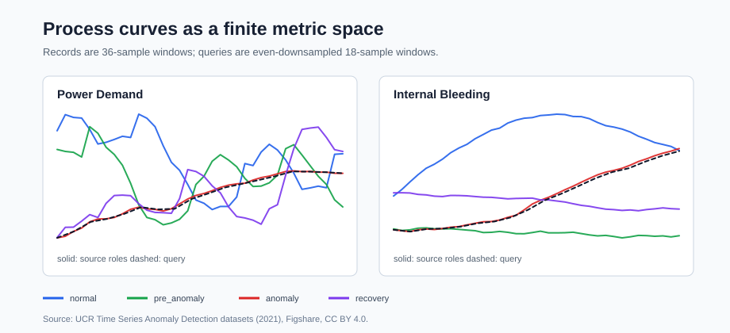

UCR process curves
Real process windows stay as curves. The alignment metric recovers the expected operating role for all queries; the padded-vector baseline misses all of them.
dataUCR Time Series Anomaly Detection, CC BY 4.0
result16/16 metric-space matches, 16/16 padded-vector misses
exportCSV tables, heatmaps, query winners, and SVG figures
build/core/examples/engine/engine_process_curve_external_gallery \
--export-dir docs/examples/assets/process-curve-external